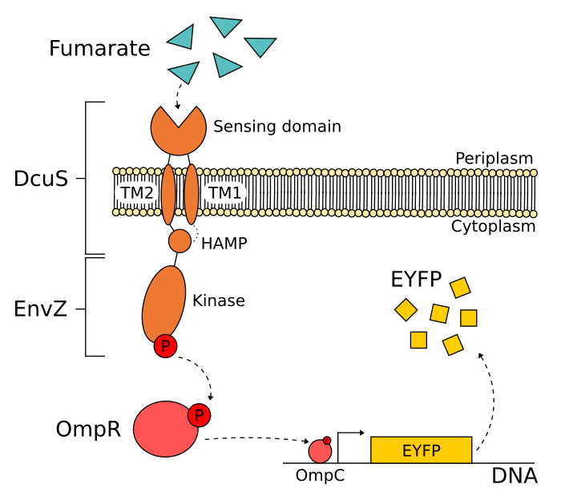
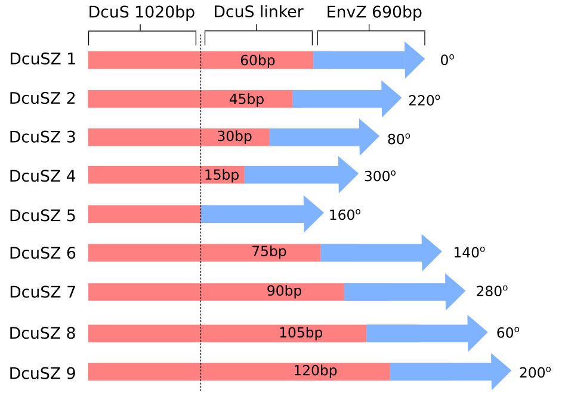
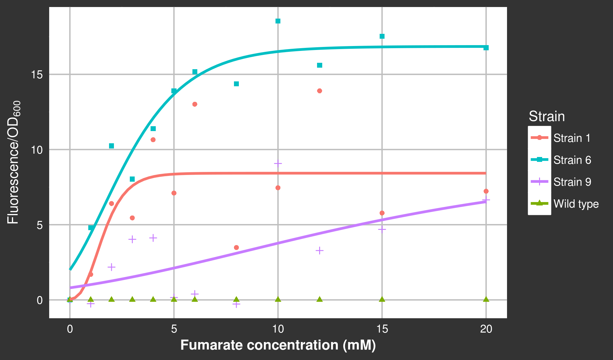
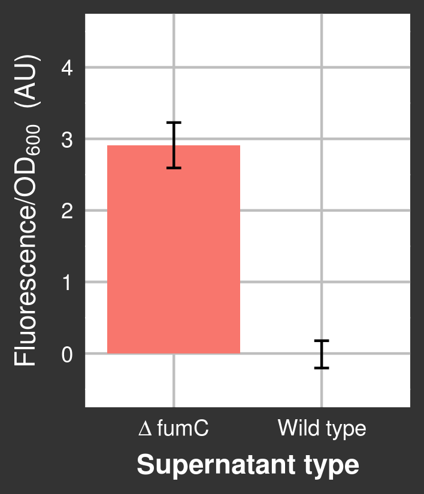
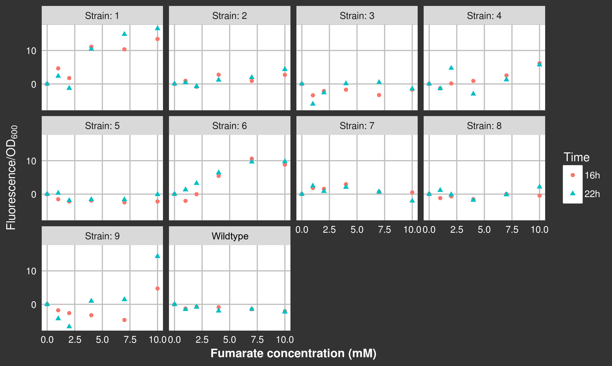
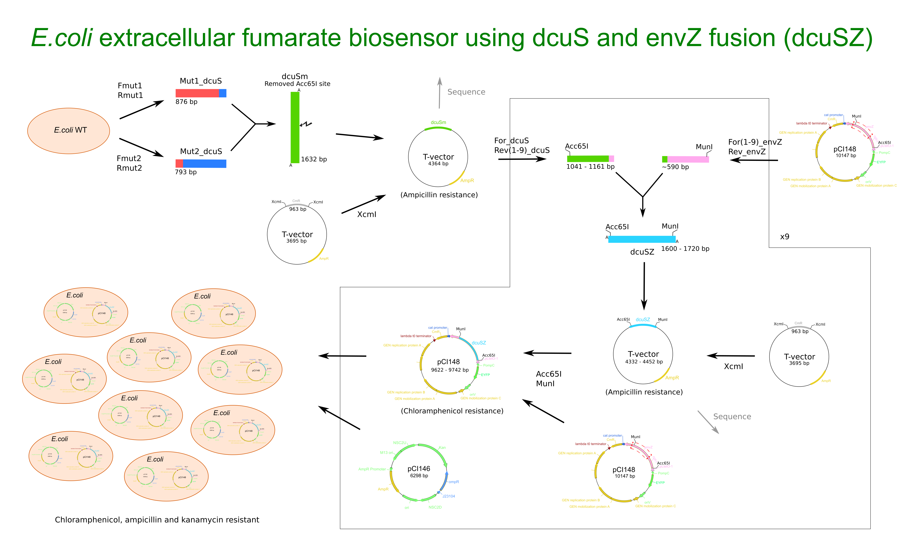
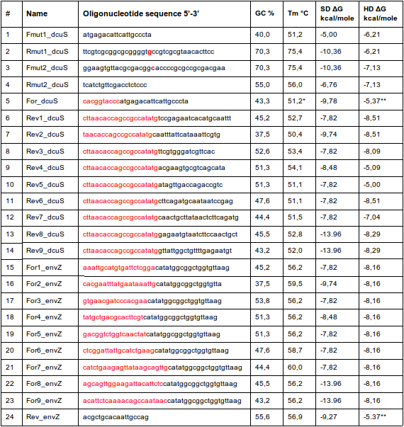
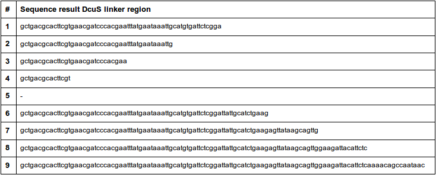
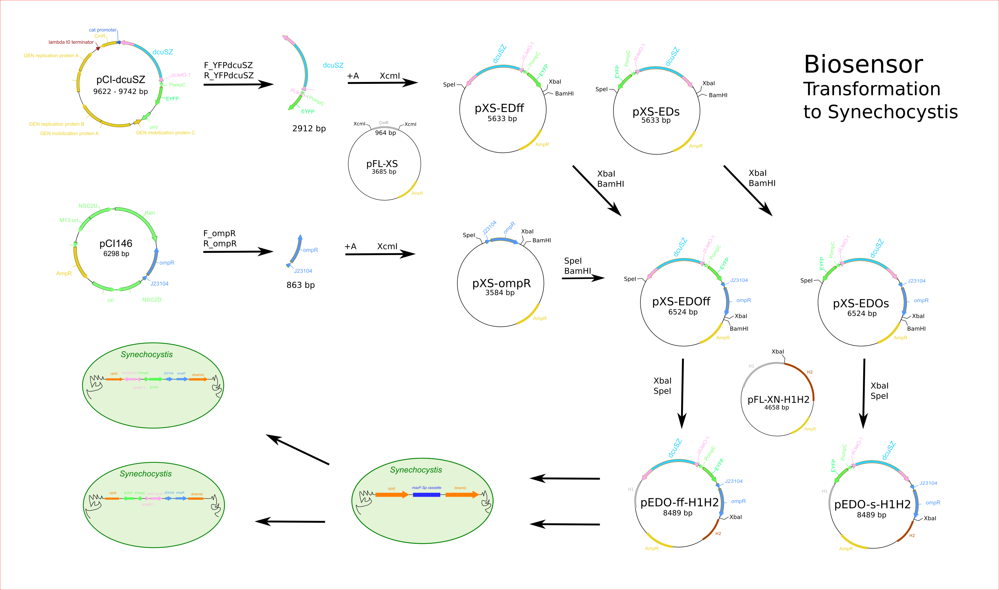

From conversations with Photanol we know that, in our quest to engineer fumarate-producing cyanobacterial factories, we need a way to quickly and easily determine if a given genetically engineered construct is actually producing fumarate. For this purpose, we constructed a biosensor, i.e. an Escherichia Coli strain that is able to sense and quantitatively report the presence of fumarate in the extracellular medium.
detect
Overview
Our fumarate biosensor is based on a well-characterized chimeric two-component system. When integrated in E. coli, this system has been reported to make the cells fluoresce when fumarate is in the environment. We constructed and investigated the functionality of different variants of this system in E. coli. This way we created several variants of our necessary fumarate biosensor, while deepening our fundamental understanding of chimeric two-component systems at the same time!
Highlights
Engineered at least 3 functional biosensors with a combined signal dynamic range of 0.1-20 mM fumarate.
Investigated the effect of linker length and kinase orientation on biosensor functionality.
Demonstrated real world applicability.
▶ Constructing a family of biosensors
Introduction
Currently fumarate concentrations in liquid samples can be quantified through two well-developed methods, high-performance liquid chromatography (HPLC) and enzymatic assays. Both methods are costly and labor intensive. In our search for cyanobacterial cell-factories we need to measure fumarate concentrations very often. Measurements need to be accurate and specific to fumarate, and on top of that measuring should be quick and easy. Fortunately, synthetic biology may be used to derive a solution to this inspired in nature.
Bacteria have evolved to use two-component systems (TCS) to sense and adapt to changes in the extracellular environment. These systems are often highly specific to particular compounds and accurate in their measurement [1]. A TCS typically consists of a sensor histidine kinase (SHK) and a response regulator. The first sits in the membrane and gets activated upon sensing particular signals such as a specific compound The second gets activated by an active SHK and can then bind to DNA at specific loci to initiate a biological response [2]. We construct a fumarate biosensor based on the DcuSZ/OmpR chimeric TCS developed in E. coli by Ganesh et al. (2013) [3]. The SHK in this system, DcuSZ, is a fusion of two native E. coli SHKs, fumarate sensor DcuS and osmolarity sensor EnvZ. The protein domains in DcuSZ are the extracellular sensing domain and transmembrane domains of DcuS and the intracellular HAMP and histidine kinase domains of EnvZ. Coupling the emerging TCS to the expression of a fluorescent reporter protein leads to cells that fluoresce in response to extracellular fumarate (fig. 4.1).
Figure 4.1The DcuS fumarate sensing, transmembrane and HAMP domains were fused to the EnvZ kinase leading to the chimeric DcuSZ/OmpR two-component system. Coupling this to fluorescent protein (EYFP) expression by using the ompC promoter leads to sensing and reporting of fumarate.
We have created several differently fused DcuSZ genes to compare their functionality. The difference is in the length of the linker region between the DcuS and EnvZ functional domains. The linker region originates from the DcuS gene and forms an α-helix. A complete turn in an α-helix consists of approximately 3.6 amino acids, so by differing the linker length in steps of 5 amino acids we extend or shorten the α-helix by ~1.4 turns per step taken. This results in a titration of the different orientations of the EnvZ kinase relative to the membrane bound DcuS domains, and thus relative to the membrane. We expect the linker length and kinase orientation play a central role in the functionality of the system. By creating 9 DcuSZ genes with different lengths (fig. 4.2), at least one of them, and at best two, are predicted to be close to the optimal orientation. By taking more than one turn per step we also scan a relatively large range of distance between the DcuS and EnvZ functional domains. This may influence the kinetics of binding and activation of the engineered TCS, possibly leading to variants with different detection limits and signal dynamic ranges for fumarate. For detailed descriptions on strain cultivation, plasmid construction, testing conditions and data analysis see the methods section.
Figure 4.2The 9 DcuSZ variants, the first 1020 basepairs of DcuS remain the same and so do the 690 EnvZ basepairs. Linkers are extended or shortened at the merge between DcuS and EnvZ. Orientations of the EnvZ kinase domains are shown relative to the orientation in DcuSZ 1, which is the gene as it was constructed by Ganesh et al. (2013) [3].
Results & Disscusion
Strains 1-9, containing corresponding DcuSZ 1-9 signaling systems, were screened for their functionality within a range of 0-10 mM of fumarate (supplementary fig. S4.1). This screening suggested that strains 1, 6 and to some extent 9 are functioning as biosensors. The screening also showed that the response in fluorescence/OD600 is robust over time. Times of measurement were quite high, namely 16 and 22 hours, because the signalling system was only induced by adding anhydrotetracycline (aTc) upon addition of fumarate. Ideally the system would be induced before adding fumarate, as in our case there is more time in which the strains can take up the fumarate. However, fumarate uptake is repressed by the presence of glucose in the medium [4].
A more thorough characterization of strains 1, 6 and 9 was performed, with a range of 0-20 mM of fumarate. By fitting a logistic curve to the data the detection limits and saturation levels of each sensing strain can be determined. Several nice examples of the logistic nature of similar sensing systems are shown by Pollard et al. (2016) [5]. By varying the linker length, and with that the kinase orientation, we expect to have changed the effectiveness of signal transduction in the chimeric DcuSZ protein. While intuitively one might expect only the range of signal detection to differ as a consequence, in reality the dynamics of the fluorescence output vary widely (fig. 4.3).
Figure 4.3Fluorescence/OD600 in strains 1, 6 and 9 for a titration of 0-20 mM fumarate. Wild type and strain specific background fluorescence were subtracted from the data as described in the methods section. The fitted curve is a Gompertz function (\(y = a e ^{-b e^{-c x}}\)).
Strains 1, 6 and 9 are all functional (fig. 4.3), with relative kinase orientations of 0o, 140o and 200o respectively. DcuSZ 1 and 6 do have similar lengths, but DcuSZ 9 is 15-20 amino acids longer than DcuSZ 1 and 6, and yet strain 9 is also functional. The characterization suggests that strain 1 can be used to quantify fumarate concentrations up to 3 mM, strain 6 up to 6 mM and strain 9 even up to 20 mM (fig. 4.3). To quantify fumarate concentrations below 1 mM, calibration in the 0-1 mM range should be performed. While strain 9 can measure up to the highest fumarate concentration, it is less sensitive than strains 1 and 6. The logistic fit is the best for strain 6 and therefore its curve is the most trustworthy. The spread in the fluorescence/OD600 of strain 1 is high, which leads to more uncertainty as to the level of saturation of this biosensor. The specificity to fumarate of these systems should be tested by comparing the response found here to the response to other C4-dicarboxylates (succinate, malate and aspartate). Previous work shows that the DcuSZ/OmpR system with the kinase orientation and linker length as they are in strain 1 is highly specific to fumarate [3].
Conclusion
Based on our results, we are unable to identify a general trend in functionality caused by the linker length and kinase orientation. However, the results do show a large difference in fluorescence response as a consequence of DcuSZ linker length and kinase orientation. In general we can conclude that varying the linker length and kinase orientation in the chimeric DcuSZ/OmpR TCS has a complex and often detrimental effect on its functionality. In light of our project specifically, we can conclude that we have successfully created a family of biosensors capable of quantifying its concentration from (at least) 1 up to 20 mM with different dynamic ranges.
▶ Everything you need to know to make your own fumarate biosensor
Materials & Methods
Strains and cultivation
Molecular cloning was performed in E. coli DH5α and E. coli XL1-Blue growing either in liquid Luria-Bertani (LB) broth at 37℃ in an incubator with a shaking speed of 200 rpm, or on solidified LB plates containing 1.5% (w/v) agar. Antibiotics were added, when appropriate, in the medium for propagation of a specific plasmid. Concentrations of antibiotics used, alone or in combination, were 100 μg ml-1 for ampicillin, 50 μg ml-1 for kanamycin and 35 μg ml-1 for chloramphenicol.
Plasmid construction
Plasmids pCI148 and pCI146 used by Immethun et al., (2017) [6] were obtained and used as a starting point for the biosensor construction. A visual approach to plasmid construction can be seen in supplementary figure S4.2. The complete DcuS gene was amplified from the E. coli genome using primers 1-4, all primers can be seen in supplementary table S4.11. Amplification with these primers gave a point mutation at position 858 (T → C) to remove an Acc65I restriction site, the amino acid remains glycine (a.a. position 286). Next, the first part of DcuS was amplified with primers 5-14, adding an Acc65I restriction site to the start of the gene and resulting in DcuS fragments with 9 different lengths. The shortest fragment consists of 1020 base pairs (bp) and the longest of 1140 bp, with steps of 15 bp in between. The E. coli EnvZ gene was amplified from pCI148, this plasmid contains the last 690 bp of the original EnvZ gene. From pCI148 the first 570 bp of the partial EnvZ gene were amplified, up to and including the MunI restriction site, using primers 15-24. Fusion PCR resulted in 9 different DcuSZ genes, which were sequence confirmed by Macrogen Europe (supplementary table S4.2). Using Acc65I and MunI restriction enzymes the DcuSZ genes were placed in the pCI148 plasmid (replicative with an RSF1010 replicon), replacing the Cph8 gene. The DcuSZ containing plasmids were transformed into E. coli together with the unedited pCI146 plasmid, leading to the fumarate sensing strains.
Testing conditions
First a screening experiment was performed on all 9 strains containing the varying DcuSZ genes and the wild type. Subsequently a characterization experiment was performed for strains 1, 6 and 9. Both experiments were performed in E. coli DH5α growing in shake flasks (screening) or glass tubes (characterization) in liquid mineral medium M9 + arginine (DSMZ 450) at 37℃ in an incubator with a shaking speed of 200 rpm. Antibiotics that were added to the experimental strains were kanamycin in a concentration of 25 μg ml-1 and chloramphenicol in a concentration of 17.5 μg ml-1. Ampicillin was not used since it influences OmpC transcription [7], and our system is placed behind the OmpC promoter. Pre-cultures were grown for ~24 hours in M9 before starting the experiment. At the start of the experiment cultures were diluted to an OD600 of 0.5 and aTc and fumarate were added. The final aTc concentration was 100 ng ml-1 and fumarate concentrations ranged from 0 to 10 mM for the screening experiment and from 0 to 20 mM for the characterization experiment. The osmolarity of the fumarate solutions was kept equal by adding the appropriate concentration of NaCl. EYFP fluorescence was measured in a 96-well plate with a BMG FluoStar Optima plate reader, using excitation at 470 nm and emission at 510 nm, gain was set to 1000. OD600 was measured using an ISOGEN Lightwave II spectrophotometer. Measurements were made after 0, 16, and 22 hours of cultivation with fumarate and aTc for the screening experiment and after 0 and 22 hours for the characterization experiment.
Data analysis
For both experiments the raw fluorescence data was corrected for position bias of the wells by subtracting the 0 hour measurement of each well from all following measurements in that well. Next, the fluorescence was normalized by dividing it by the corresponding untransformed OD600 measurement. For the characterization experiment the wild type fluorescence/OD600 was subtracted from fluorescence/OD600 of all strains. To better compare the dynamics of each strain's response we removed the background fluorescence/OD600 by subtracting the 0mM fluorescence/OD600 of each strain at each time point from the fluorescence/OD600 of all concentrations of that strain at that time point. This was done for both experiments. For the characterization experiment a Gompertz function was fitted to the data. The Gompertz function is a Hill equation-like logistic equation with this structure: \(y = a e ^{-b e^{-c x}}\) where a is the asymptote and b and c are positive numbers.
▶ Real world use of our biosensors
Introduction
We have developed a family of biosensors to screen for fumarate production in our different Synechocystis cell factories. In their current form, this can be done in several ways. To screen a large amount of producing cells, as would be the case when screening a library, you can mix the E. coli biosensor with Synechocystis cell factories in an emulsion. The emulsion can be created as shown by Bachmann et al. (2013) [8]. In this emulsion E. coli does not need to be able to grow, it only needs to be able to make fluorescent protein de novo. Furthermore, as long as a preferred carbon-compound is available, such as glucose, uptake of fumarate will be repressed [4].
For a smaller range of cell factories fumarate detection can be performed in a standard 96-well plate. For the most accurate result you can pellet a culture with a producing strain and use the supernatant to resuspend the same amount of biosensor for each culture. A wild type culture should be used to subtract background fluorescence. We demonstrate this way of using the biosensor, specifically strain 6, using a Δfumc culture of which we do not initially know the fumarate concentration (blind trial). Afterwards, we will validate its measurement using HPLC and compare the two.
Results & discussion
The biosensor produced a significant signal for 22-60 hours after resuspension in Δfumc supernatant (fig. 4.4). The mean fluorescence/OD600 measured over this time period in arbitrary units is approximately 3. This signal is too low to determine a fumarate concentration with strain 6, as our lowest calibration measurement was made at 1 mM fumarate and this led to a fluorescence/OD600 of about 5 AU.
Figure 4.4Mean fluorescence/OD600 signal of 22-60 hour measurements. The error bars depict a 95% confidence interval. Wild type data was used to subtract background fluorescence/OD600 as described in the materials and methods.
HPLC measurement of the Δfumc supernatant gave a fumarate concentration of 0.0870 mM which confirms our conclusion that the fumarate concentration was too low to be measured by strain 6, using the current calibration. Our result does indicate that with more thorough calibration such low concentrations can also be quantified, as the sensor still produces a stable and significant signal.
Conclusion
We were able to qualitatively detect fumarate in the extracellular medium of one of our producing strains. The results further suggest that after more thorough calibration our biosensors can be used to quantify fumarate concentrations lower than 0.1 mM.
Future application
Apart from its usage in E. coli the engineered system is also suitable to be integrated in Synechocystis, which could be useful for several reasons: (i) prevent the need to cultivate E. coli and Synechocystis together, which can be challenging; (ii) under aerobic conditions E. coli may consume fumarate while Synechocystiswill not; and (iii) this would grant us the opportunity to engineer cell factories that detect their own production, which could be used to design more complex regulatory circuits in which cells regulate their own fumarate production. Although this was not implemented within this iGEM project, we did devise a detailed approach on how to integrate the created system in Synechocystis (supplementary fig. S4.3).
Materials & Methods
Testing conditions
Biosensor strain 6 was inoculated and cultured overnight in liquid mineral medium M9 + arginine (DSMZ 450) + 17.5 μg ml-1 chloramphenicol + 25 μg ml-1 kanamycin + 100 ng ml-1 aTc, at 37℃ in an incubator with a shaking speed of 200 rpm. After 20 hours two aliquots of 2 ml of this culture were pelleted by centrifuging at 5000 rpm for 10 minutes, the supernatant was discarded. Next, 2 ml of both a wild type and a ΔfumcSynechocystis culture were pelleted by centrifuging at 14500 rpm for 5 minutes, 1 ml of each culture's supernatant was used to resuspend one of the biosensor cell pellets in. Each resuspension was divided over 6 wells, leading to 6 replicates, in a 96-well plate which was placed in a FluoStar Optima plate reader at 37℃ for 60 hours. Fluorescence was measured using excitation at 470 nm and emission at 510 nm, gain was set to 1000. OD600 was also measured using the FluoStar Optima plate reader. Measurements were made every 15 minutes for 60 hours.
Measuring using HPLC
Of both cultures 1 ml was centrifuged at 15.000 rpm for 10 min. Then 500 μl supernatant was taken and filtered (Sartorius Stedin Biotech, minisart SRP 4, 0.22 μm) for sample preparation. Fumarate concentration was measured by HPLC-UV/VIS (LC-20AT, Prominence, Shimadzu), with ion exclusion Rezex ROA-Organic Acid column (250x4.6 mm; Phenomenex) and UV detector (SPD-20A, Prominence, Shimadzu) at 210 nm wavelength. 50 μL of the HPLC samples were injected through an autosampler (SIL-20AC, Prominence, Shimadzu), with 5 mM H2SO4 as eluent at a flow rate of 0.15 ml min-1 and column temperature of 45℃. Fumarate retention time was determined as 18.16 and 18.36 min and fumarate samples were normalized by a correction factor composed of 10 mM divided by the measured TES concentration.
Data analysis
Position bias was corrected for by subtracting the mean of the first three measurements in each well of all measurements in that well for both fluorescence and OD600. For the OD600 the mean OD600 of the first measurement in 6 replicates was subsequently added. The OD600 was inspected and found to constantly be in the range of 0.8. We know from earlier experiments that in this range the spectrophotometer that was used for the calibration gives an approximately 2.5x higher value. To be able to use this measurement with the calibration curve the OD600 was multiplied by 2.5. Fluorescence was normalized by dividing it by the OD600. Background fluorescence/OD600 was corrected for by subtracting the mean wild type fluorescence/OD600 over 6 replicates per time point of all separate fluorescence/OD600 values at that time point. The data was plotted by taking the average over 22-60 hours for every replicate and plotting the mean of these replicates with an error bar showing the 95% confidence interval.
References
Hazelbauer, G. L., & Lai, W. C. (2010). Bacterial chemoreceptors: providing enhanced features to two-component signaling. Current opinion in microbiology, 13(2), 124-132.
Stock, A. M., Robinson, V. L., & Goudreau, P. N. (2000). Two-component signal transduction. Annual review of biochemistry, 69(1), 183-215.
Ganesh, I., Ravikumar, S., Lee, S. H., Park, S. J., & Hong, S. H. (2013). Engineered fumarate sensing Escherichia coli based on novel chimeric two-component system. Journal of biotechnology, 168(4), 560-566.
Görke, B., & Stülke, J. (2008). Carbon catabolite repression in bacteria: many ways to make the most out of nutrients. Nature Reviews Microbiology, 6(8), 613-624.
Bi, S., Pollard, A. M., Yang, Y., Jin, F., & Sourjik, V. (2016). Engineering hybrid chemotaxis receptors in bacteria. ACS synthetic biology, 5(9), 989-1001.
Immethun, C. M., DeLorenzo, D. M., Focht, C. M., Gupta, D., Johnson, C. B., & Moon, T. S. (2017). Physical, chemical, and metabolic state sensors expand the synthetic biology toolbox for Synechocystis sp. PCC 6803. Biotechnology and Bioengineering.
Batchelor, E., Silhavy, T. J., & Goulian, M. (2004). Continuous control in bacterial regulatory circuits. Journal of bacteriology, 186(22), 7618-7625.
Bachmann, H., Fischlechner, M., Rabbers, I., Barfa, N., dos Santos, F. B., Molenaar, D., & Teusink, B. (2013). Availability of public goods shapes the evolution of competing metabolic strategies.Proceedings of the National Academy of Sciences, 110(35), 14302-14307.
▶ Supplementary Material
Figure S4.1Screening of constructed strains, the y-axis shows Fluorescence/OD600, the background Fluorescence/OD600 has been subtracted as described in the methods section. The x-axis shows fumarate concentration with a range of 0mM to 10mM. Each strain is depicted in a separate plot and two measured time points are shown, 16h (o) and 22h (Δ).Figure S4.2pCI-dcuSZ plasmid constructionTable S4.1Primers, Nucleotides in red are not on the template. * Tm for the first pcr reaction (first part is not annealed), Tm for second reaction is 60,0 ºC ** Hetero-dimer of For_dcuS with Rev_envZTable S4.2DcuSZ 1-9 sequences of linker region, sequence confirmed by Macrogen Europe (the Netherlands)Figure S4.3Approach for DcuSZ/OmpR integration in the Synechocystis genome